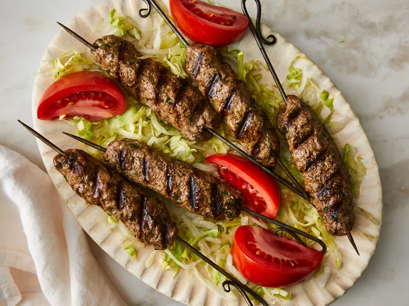

Kofta
home

Kofta Kebabs
These kofta kebabs are made with ground lamb that's seasoned with garlic
and six different kinds of spices, then molded onto skewers and cooked on
the grill. They are very good! Serve with yogurt, flatbread, lettuce,
tomato, and cucumber.
ingredientS
- 4 cloves garlic, minced
- 1 teaspoon kosher salt
- 1 pound ground lamb
- 3 tablespoons grated onion
- 3 tablespoons chopped fresh parsley
- 1 tablespoon ground coriander
- 1 teaspoon ground cumin
Steps
- Mash garlic into a paste with salt.
-
Mix garlic into lamb with onion, parsley, coriander, cumin, cinnamon.
-
Form mixture into 28 balls. Form each ball around the tip of a skewer.
-
Preheat an outdoor grill for medium heat and lightly oil the grate.
- Cook skewers on the preheated grill.
- Serve hot and enjoy!